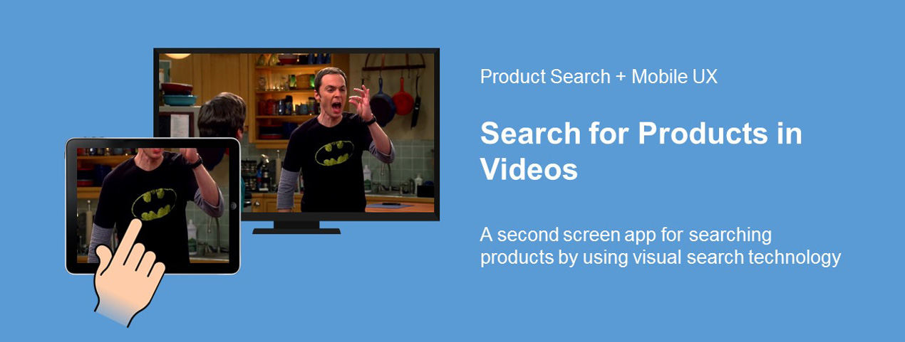
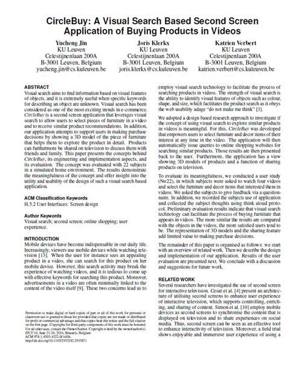
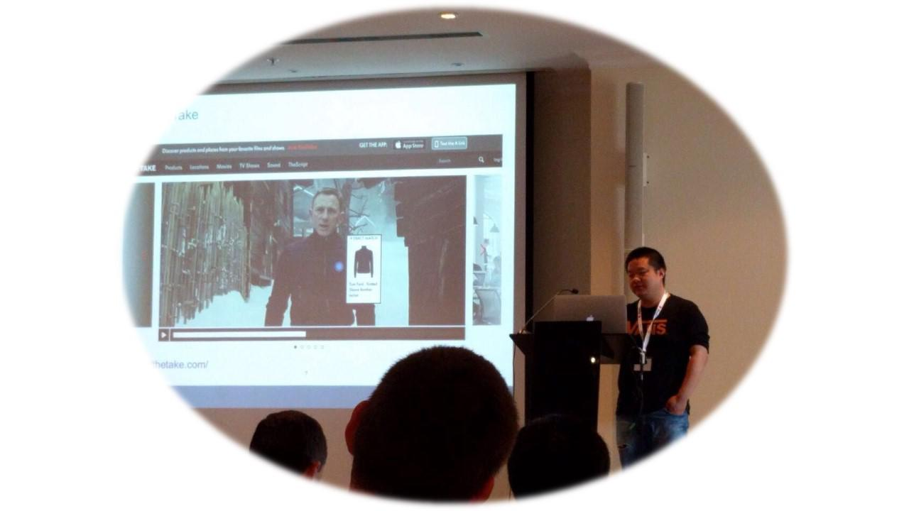

CircleBuy

Client
My role
User Research
UX Design
Prototype Development
Visual search aims to find information based on visual features of objects, and it is extremely useful when specific keywords for describing an object are unknown. Visual search has been considered as one of the most exciting trends in e-commerce.
What do we benefit from visual search technology?
It shows the possibility to select or point to information by the user (e.g. on touch screen) whereby the content is automatically recognized and the user is automatically directed to a Web page with product information on the selected content.
A number of mobile apps of visual search such as Slyce, Amazon Flow, Snap Fashion have been developed, in which users can find products by taking a photo. However, taking a photo to precisely select a specific product in a video is difficult.
CircleBuy is designed especially for searching products in videos with seamlessly integrating visual search while watching videos. We actually find a second screen application named TheTake which allows users to discover products from their favourite videos.
| TheTake | CircleBuy |
|---|---|
| Editors match ads with videos manually and beforehand. | Link ads to videos automatically and on the fly. |
| Inflexible user interaction with fixed annotated points. | Flexible user interaction by drawing. |
| No 3D models are provided | 3D models and an AR view |
PRELIMINARY DESIGN
Scenario
Figure 3 shows a scenario of using CircleBuy. The numbers coincide with the numbers on figure 3:
- Tom is watching a movie on TV.
- He sees a car that might be interesting and searches for it on the mobile phone.
- The relevant cars will be listed on his mobile phone.
- A bit later, he sees a character in the movie wearing a jacket that he likes.
- He searches for it on his mobile phone.
- The jacket is shown on his mobile phone.
- The movie has ended and the user indicates he really likes the jacket and might want to purchase it.
- The jacket, along with instructions where Tom can buy it, is shown on his mobile phone.
Persona

BASIC INFO
- 35 years old
- Secretary
- 25 years old
- Student
VIDEO WATCHING
- Watch videos on the mobile devices most of time (about 70%).
- Like watching TV series and talk show.
- Spend 3-4 hours watching videos every day.
- Watch videos on the TV most of time (about 80%).
- Like watching sports and movies.
- Spend 2-3 hours watching videos.
ATTITUDES TOWARDS ADS
- Try to skip most of non-targeted ads.
- May click some interesting targeted ads.
- Try to block all kinds of ads.
- Never click online ads.
WAYS OF SHOPPING
- Prefer online shopping.
- Would like to spend time to search for best price.
- Prefer to buy stuffs in the real shop.
- Would not like to spend too much time.
ACTIVITIES OF USING MOBILE PHONE DURING VIDEOS
- Play social media.
- Searching for some products in videos.
- Play social media.
- Play games.
NEEDS AND WANTS
- Find the similar products to the items in videos easily.
- Have more real experience of trying online products.
- Would like to get more details about products in videos (price, comments).
- Online shopping for products in videos should be fun.
Design Insight
- CircleBuy allows users to control the television by selecting videos to play, pause, rewind and fast-forward.
- Users can search for items that appear in those videos.
- Show a list of similar products offers in online web shops.
- 3D view that enables users to explore more details of the product.
Prototype
Video demo
Interaction between second screen app and TV
You can also watch it on Youku.
The AR view of shopping item is supported in our demo
You can also watch it on Youku.
User Study
We employed a mix of quantitative and qualitative methods to evaluate if our approach can be meaningful towards facilitating the process of purchasing products that appear in videos. More specifically, we investigated if:
- CircleBuy facilitates the entire process of finding and buying products that appear in videos.
- The similarity of resulting products of visual search influences users’satisfaction and therefore user adoption.
- Showing a 3D model view adds value for making purchase decision(s).
- Sharing a product on TV adds value for making purchase decision(s).
Setting up
We set up our evaluation in an office with a 60 inch TV and a sofa (see Figure 5) to mimic a living room setting. The whole procedure of evaluation was recorded by a Logitech camera.
Method
We use record the users activities on app in a log file. Apart from using questionnaires, during the evaluation we also employed the think-aloud protocol to collect subjects' feedback.
Results
- Our app can facilitate the entire process of finding and buying products that appear in videos.
- The similarity of resulting products of visual search tends to influence users’ satisfaction and therefore user adoption.
- It is more likely that 3D model view and sharing feature add limited value for making purchase decision(s).
- Around 80% of subjects thought the AR view can increase the meaningfulness of 3D models.
Publication
For more details about this work, please check our paper ;)
2016 ACM SIGCHI Symposium on Engineering Interactive Computing Systems (EICS 2016) @Brussels, Belgium
 Check my talk ;)